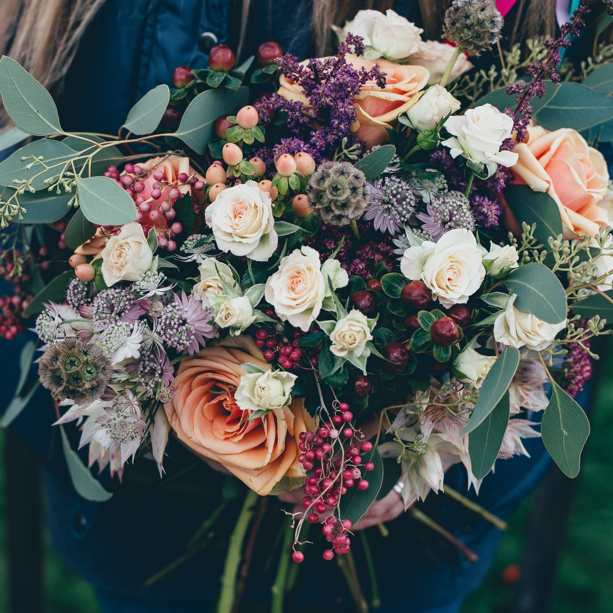

ATELIER FLORAL · LIMA, PERÚ
Hay cosas que
solo dicen
las flores.
Pequeños gestos, grandes sentimientos. Ramos de autor para celebrar lo cotidiano y hacer inolvidable lo especial.
Hecho a mano. Elegido con el corazón.

DE NUESTRO JARDÍN, PARA TIFlores que cuentan tu historia.
01 / CAMPO DEI FIORIDiseño floral de autor✧Dedicatorias que se guardan✧Detalles con intención✧Inspirados en la naturaleza
UN RAMO PARA CADA HISTORIA
Nuestros favoritos del jardín

NUESTRO PEQUEÑO UNIVERSO
Un campo de flores.
Mil formas de sentir.
Campo dei Fiori nació de una idea sencilla: no hace falta una gran ocasión para regalar algo bonito. A veces, un martes cualquiera también merece flores.
Conoce nuestro atelierCon cariño, Campo dei Fiori